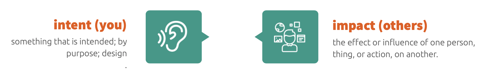

Repairing
Repairing is the ability to correct misunderstandings and manage conflict. This involves engaging and responding to feedback in order to solve problems. Having the skill to repair is very important in preventing a communication breakdown. A model to think about when a miscommunication occurs is the “Intent-impact model”. This model focuses on taking responsibility and trying your best to see things from the other person's perspective. This model is talked about in more depth below. This strategy is important in solving difficult situations and can help stop further complications in the future by setting the standard of open communication and empathy towards one another. Repairing not only solves disagreements, but prevents future misconceptions and complications.
The first strategy in repairing is addressing miscommunications early rather than avoiding the conflict, which may escalate the situation. The next strategy involves learning the “Intent-impact model”. When your words (intent) have an unexpected result (impact), negative emotions can escalate. In other words this is how you make someone else feel. The other person may not know your intended message, only the impact of the message is received. The purpose of this model is to think about how your actions have impacted others. Instead of getting defensive and saying “That’s not what I intended.”, it is important to listen to the other person and understand what went wrong. When you know what upset the other person, you can fully explain what you meant, thus deescalating the situation. It is important to remember to take responsibility instead of placing blame for their reaction.
Understand that various factors can contribute to miscommunications. For example, differences in culture and age can mean that people perceive things in very different ways. It is also crucial to actively listen to the others’ point of view in repairing misunderstandings.
Care about what others are saying. It is important to actually hear what the other person is saying. Try to ask questions and show that you are genuinely interested in what they are saying, instead of just waiting to get a word in.
